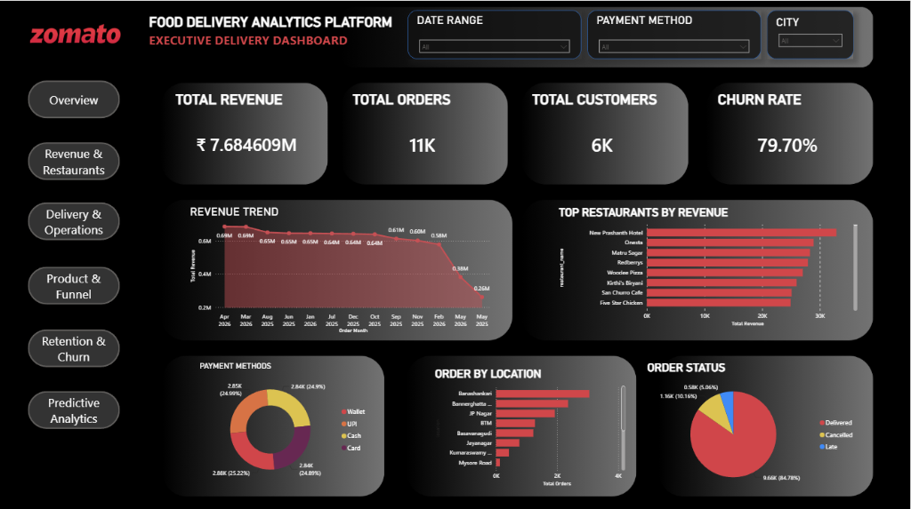
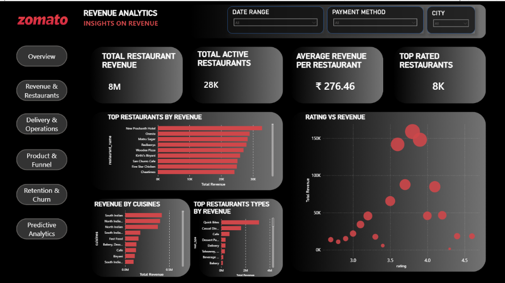
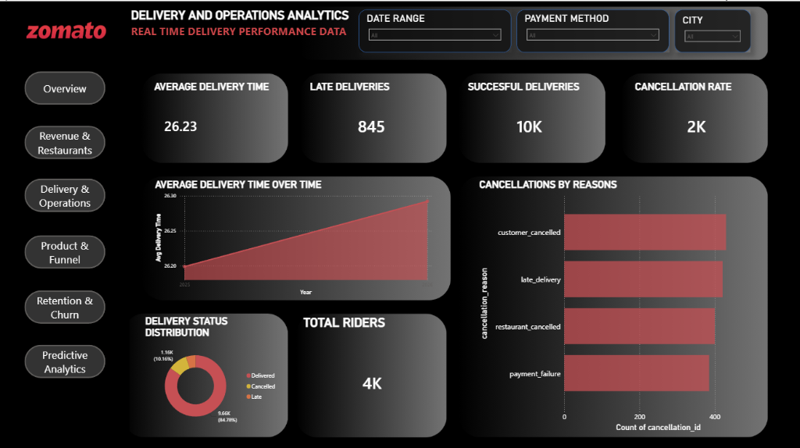
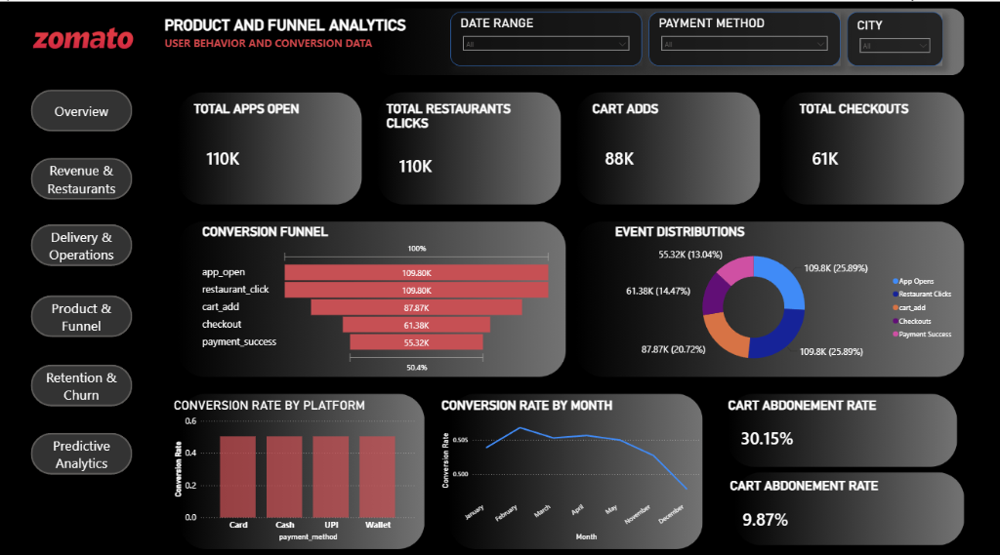
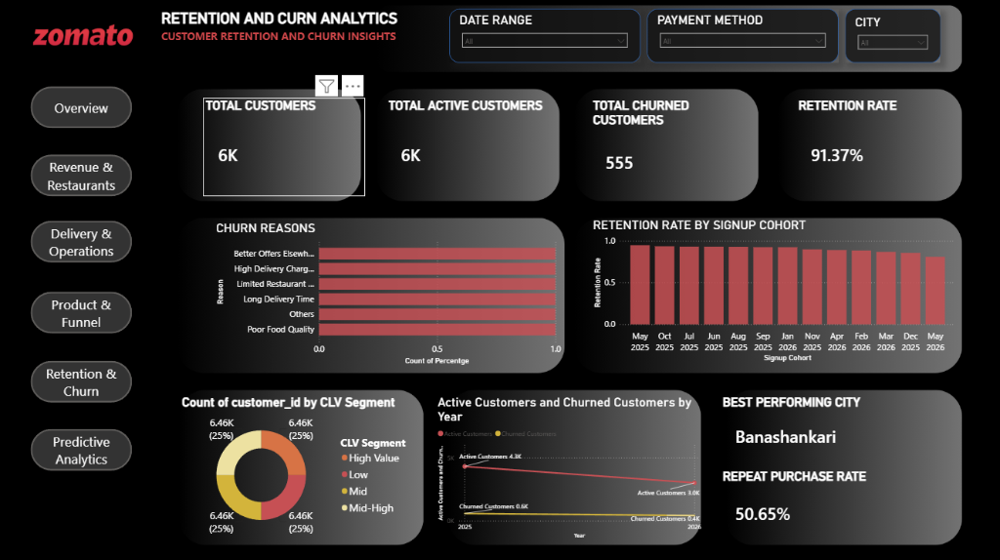

An end-to-end Business Intelligence solution designed to help product and business teams monitor platform health, optimize delivery performance, and improve retention.
Food Delivery Analytics Platform is an end-to-end Business Intelligence solution designed to help product and business teams monitor the health of a food delivery platform. By integrating operational, transactional, and customer interaction data, the platform enables stakeholders to identify revenue drivers, optimize delivery performance, improve customer retention, and uncover conversion bottlenecks across the user journey. Interactive dashboards provide actionable insights into executive KPIs, customer behavior, operational efficiency, and business growth, supporting data-driven product and strategic decision-making.
Explore all 5 interactive Power BI command center dashboards below:

Provides C-suite and Product Leaders with high-level command metrics including Total Revenue (₹7.684M), Order Counts (11K), Active Customers (6K), and Churn Rate (79.70%). Features monthly revenue trend forecasting, top restaurant revenue rankings (New Prashanth Hotel, Onesta), payment method distributions (UPI, Wallet, Cash, Card), location demand maps, and delivery status breakdown (84.78% delivered successfully).

Evaluates partner restaurant monetization and unit economics. Highlights Total Restaurant Revenue (₹8M), Active Restaurant Count (28K), Average Revenue Per Restaurant (₹276.46), and Top Rated Partners (8K). Features a Rating vs. Revenue scatter matrix identifying rating sweet spots, cuisine revenue leaders (South Indian, North Indian, Fast Food), and top restaurant category types (Quick Bites, Casual Dining, Cafes).

Tracks logistics efficiency, SLA bottlenecks, and rider network health. Monitors Average Delivery Duration (26.23 mins), Late Deliveries (845), Successful Deliveries (10K), and Order Cancellation Rate (2K). Features average delivery time progression over time, delivery status donut chart, total active riders (4K), and cancellation reason categorizations (Customer Cancelled, Late Delivery, Restaurant Cancelled, Payment Failure).

Maps user conversion journeys from discovery to payment completion. Tracks Total App Opens (110K), Restaurant Clicks (110K), Cart Adds (88K), Checkouts (61K), and Payment Success (55.32K). Quantifies the 50.4% overall end-to-end conversion rate, cart abandonment rates (30.15%), platform conversion performance across Card, Cash, UPI, and Wallet, and monthly conversion stability trends.

Analyzes customer lifetime value (CLV) and long-term product stickiness. Features Overall Retention Rate (91.37%), Repeat Purchase Rate (50.65%), and Top Performing City (Banashankari). Includes Customer Lifetime Value segmentation (High Value, Mid-High, Mid, Low), Churn Reasons breakdown (Better Offers Elsewhere, High Delivery Charges, Long Delivery Time), and Retention Rate decay across signup cohorts from 2025 to 2026.